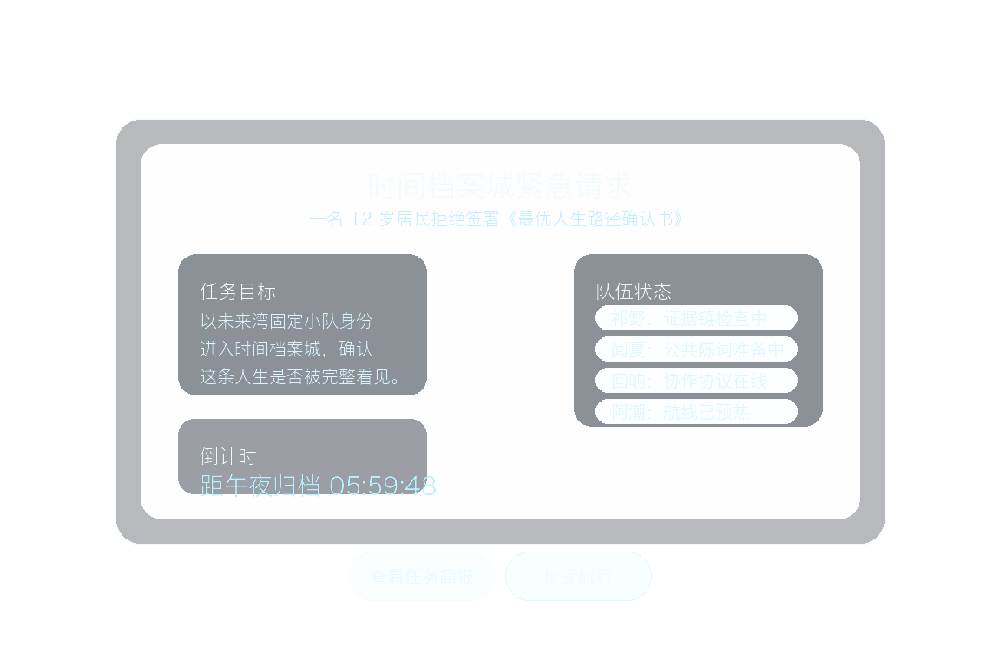

Chapter 01 资产总览
这份页面只保留 chapter-01 当前仍有长期价值的资产入口：稳定角色、场景母图、关键镜头、交付视频与可复用 UI 层。不再保存过程复盘、失败分支、请求日志或临时计划。
当前总览
主角阵列 已收束为玩家主位、林澄、祁野、闻夏、回响、档案守望者、阿潮，以及制度对手序列员 07。
当前稳定母图 为 `S-01 / S-02 / S-04 / S-06 / S-07 / S-09`，足以支撑 chapter-01 的开场、制度压力、公共表达与回航收束。
Part 1 已更新到 `v5` 主交付；Part 2 已建立 `delivery v1` 主装配文件，并保留 `paper cut v1` 作为节奏验证基线。
Part 1 交付视频
未来湾任务码头完整开场
当前主交付文件为 `part-01-future-bay-task-dock-delivery-v5.mp4`。这一版在保留 `v4` 节奏结构的前提下，进一步修正了守望者出镜位的人声口型错位，并移除了 `A06` 模型自动配乐，只保留更克制的世界内启航声场。
- 输出文件：`part-01-future-bay-task-dock-delivery-v5.mp4`
- 成片规格：`1152x768 / 30fps / 23.8s / AAC stereo`
- 画面路线：`A01-A03` 稳镜开场、`A04` 静默交付视觉、`A05` clean plate + offscreen 守望者交付、`A06` 启航视频
- 音频路线：短句交付配音 + speech ducking 混音 + 去除模型自动配乐后的 restrained launch / route / city 声场层
- 配套文件：交付 metadata、任务简报静态交付层、四条 `v5` 可复用 voice stems
Part 2 当前交付
紧急入港校验 delivery v1
当前主装配文件为 `part-02-emergency-entry-check-delivery-v1.mp4`。这条交付保持 `B02/B03` 的 UI-first 路线，同时为 `B01/B04` 预留正式 Wan clip 插槽；如果正式视频已生成，重跑主装配脚本即可原位升级同一交付文件。
- 主文件：`part-02-emergency-entry-check-delivery-v1.mp4`
- 成片规格：`1152x768 / 30fps / 22.4s / AAC stereo`
- 结构路线：`B01` 准入航行，`B02/B03` 后叠校验 UI，`B04` 入厅桥接
- 正式视频模板：`shot-b01-entry-approach-wan2.6-i2v-flash-v1`、`shot-b04-entry-bridge-wan2.6-i2v-flash-v1`
- 稳定资产：`render_chapter01_part2_delivery.sh`、`b02-entry-permit-overlay-v1.png`、`b03-entry-restrictions-overlay-v1.png`
- 验证文件：`part-02-emergency-entry-check-papercut-v1.mp4` 继续保留作低成本节奏基线
固定团队与角色锚点
玩家 / 学生主位
身份：未来湾见习建造者第一人称主位。
作用：把分散信息、人和立场组织成判断，并承担团队最后的走向。
林澄
身份：chapter-01 之后与未来湾长期连接的常驻伙伴起点。
作用：让“制度问题”落进具体人生冲突。
祁野
身份：未来湾设备棚常驻少年成员。
作用：拆规则、查输入、建证据链，保证团队不过度依赖情绪判断。
闻夏
身份：未来湾公共舞台的少年组织者。
作用：把复杂问题翻译成别人能理解、能加入、能共同承担的公共表达。
档案守望者
身份：未来湾高阶记录者与任务发放者。
作用：打开任务入口，维持文明视角，不代替孩子下判断。
阿潮 / 回响 / 序列员 07
阿潮：未来湾公共航行器与转场角色。
回响：常驻 AI 协作伙伴，负责整理与协作，不越权。
序列员 07：制度逻辑代表，承担稳定、精准且持续施压的对手功能。


主场景母图


开场镜头资产
A01-A03 开场三镜
这三张首帧与对应视频共同承担“到场、建立、灰银任务信号点亮”的开场职责。它们现在已经是 Part 1 的稳定前半段资产。
- A01：第一人称站上未来湾任务码头
- A02：未来湾外部空间建立镜头
- A03：灰银级请求信号点亮


A04 档案守望者任务交付
A04 是开场最重要的责任交付镜头。当前保留主角色参考、首帧以及 `3.4s` 的正式 trim 视频，作为 Part 1 的稳定中段资产。

A05 任务简报展开
A05 当前正式路线是 `clean plate motion + delivery overlay`。页面保留底板、交付层与浏览器预览，分别服务正式装配与快速查看。


A06 接受航行后的启航
A06 当前保留主线启航首帧、阿潮可见试用首帧与带真实音轨的 route-only 主线视频，作为 Part 1 的出发段资产。